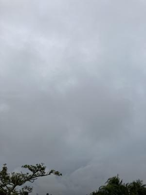
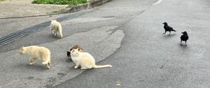
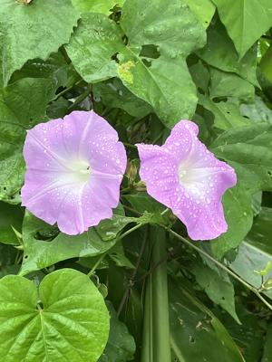

うるがいの話 ある日
最新: 春分の日【うるがいの話 ある日】とは 一日だけのプログです
『うるがいの話』の最新一日だけのプログで、通信料が少なく経済的だ。カニの画像をクリックすると全ての日付が載る『うるがいの話』サイトを表示します
|
|
【うるがいの話】 うるがい(ｳﾙｶﾞｲ urugai)とは、『もずくがに』の名前でとても大きくなります。 |
|---|---|
|
|
【カミマヤーの話】 猫のことを方言でマヤーといいます。カミマヤー（kamimayaa）とは、神の猫のことです。 |
|
【たながぁの音楽】 たながぁ（ﾀﾅｶﾞｰ tanagaa）とは手長えびのことで、何種類かあり大きいのは車 エビぐらいになります。 |

|
【ぶながぁの話】 ぶながぁ(ﾌﾞﾅｶﾞｰ bunagaa)とは、赤い髪の毛、赤い身体、そして身長は１ｍ２０ｃｍ ぐらい、川の蟹を食べているの目撃された。場所は沖縄県国頭郡大宜味村のと ある村僕の隣近所に住んでいる爺さんから、聞いた話です。 |
|
|
【ギーマの話】 ギーマ(giima)とは、山原の里山に咲くスズランに似た、 花を付けます。実は食べられます、 気が付くと口の周りが紫になっています。 |
2026年03月20日 (金）春分の日
15:19

掃除でも重宝する新聞 ６４歳 琉球新報の投稿から
私の目覚めは午前２時半から３時半ごろである。寝るのが午後９
時から１０時と早いので目が覚める。昼間眠くなると１５分から
３０分昼寝をする。私の地域では新聞の配達が午前２時半ごろか
ら３時半ごろである。早い配達に感謝している。・・・・・・・
フムフム、今日の私は２時半に一度目が覚め、何とか頑張って眠
り目が覚めたのは６時でした。通常は５時か４時です、この前４
時に起き朝の作務をしていると、新聞配達のバイクの音が聞こえ
ました。ン、これまでは６時頃だったのに、新聞配達の人が変わ
ったようです。それ以降は配達が早くなっています。それでも投
稿の地域よりかなり遅い。ちなみに私は、午後１１時に寝むりま
す。朝の作務のあと、一度寝て、さらに昼過ぎまた寝ます。オジ
ーですよ。
きのうジョギングに出かけると猫が、集まっていました。誰かが
餌を撒いたよです。すると、そばにカラスが２羽餌を狙ているの
でしょうか、写真は私が近づいてきたので、解散し始めた頃。

雨の中のピンク色のリュウキュウ朝顔
